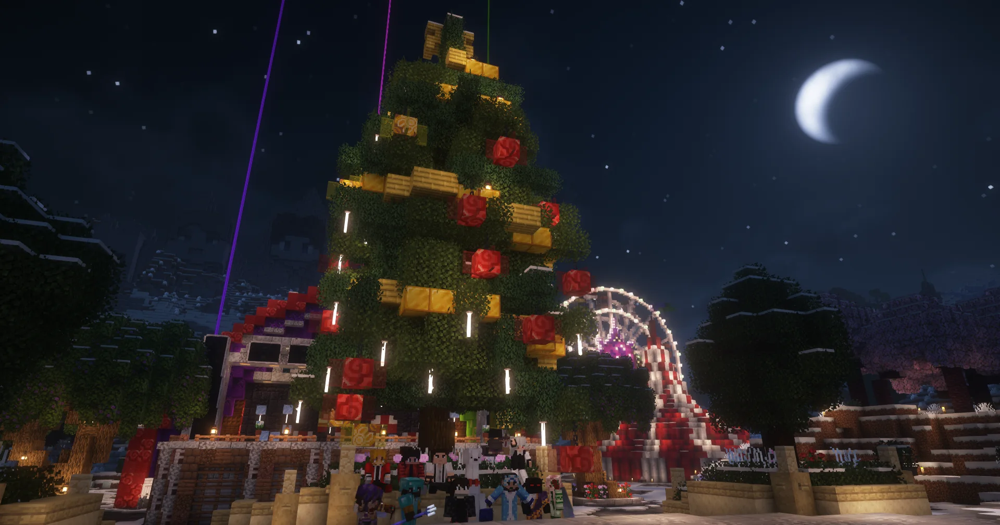

ИНФОРМАЦИЯ
ASTRUM - ванильный полу-РП проект, содержащий элементы РП, которые не являются обязательными. Это означает, что на сервере есть ФБР, Министры, система городов и другие интересные структуры. На сервере нет приватов и лишних команд, вроде (/spawn, /kit и прочего мусора)! Для входа не нужна лицензия. Сервер придерживается ванильности, но при этом имеет уникальные механики, делающие геймплей интереснее.
НАШИ ПРЕИМУЩЕСТВА
- Ванила+ механики, делающие игру интереснее при этом не влияющие на общий геймплей. Мы долго продумываем все механики, чтобы они сочетались и дополняли ванильную игру.
- Доброе комьюнити и хорошая администрация. Мы держим волну с игроками и стараемся приносить на сервер добро.
- Полностью ванильный спавнрейт, рабочие фермы + включенные дюпы ТНТ, рельс и ковров.
- 20 TPS при любом онлайне и любой нагрузке. Мы используем современное серверное ядро, которое разделяет TPS на разные регионы. Например, на спавне много игроков и 15 TPS, а отойдя дальше от спавна вы попадете в чанки с идеальными 20 TPS.
- Дорогостоящее серверное оборудование. Наш проект способен покупать мощное железо для хоста проекта.
Не загружается? Смотреть на YouTube
DISCORD СЕРВЕР
Для игры на сервере обязательно состоять в нашем Discord-сервере. Через него проходит вся коммуникация между игроками и связь с администрацией.
Открыть DiscordIP СЕРВЕРА
Основной IP сервера:
astrums.proВЕРСИЯ СЕРВЕРА
1.21 – 26.2 — рекомендуем использовать 26.2
- Ядро сервера - 26.2